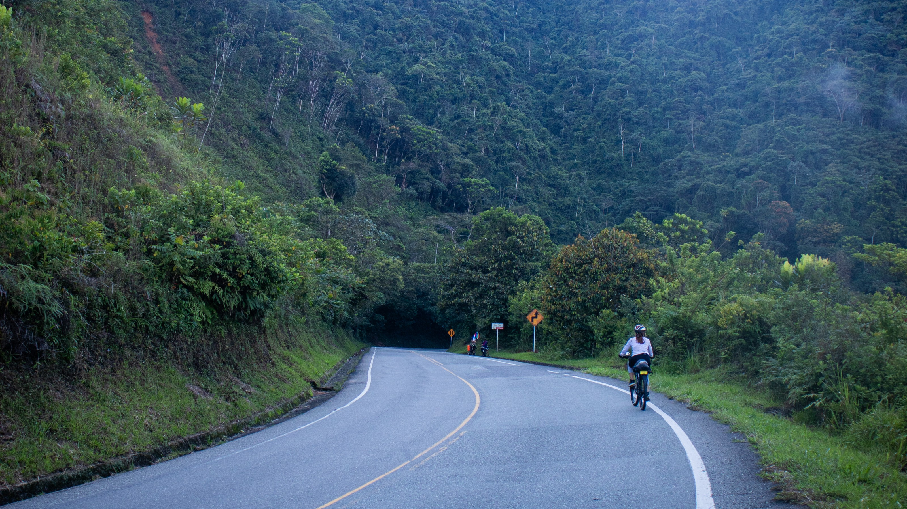

Cada territorio se convierte en una historia.
Cada encuentro, en una sincronía.

El río empezó a escucharse antes de que lo viéramos.
Ahí encontramos dónde pasar la noche.
Don Julio no nos estaba esperando.
—Pero aquí siempre hay lugar.